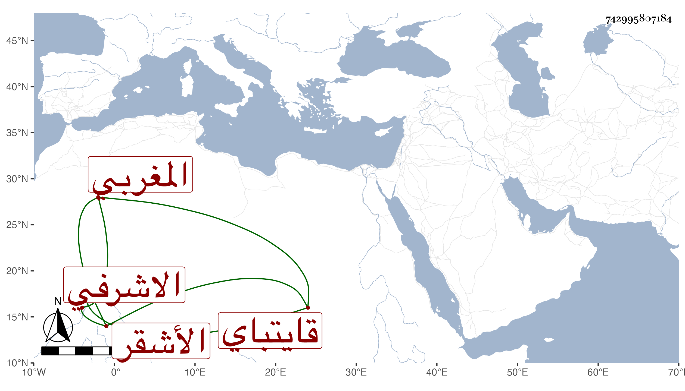

0902Sakhawi.DawLamic.ITO20230111-ara1.EIS1600.742995807184
Biography ID: 742995807184
217
جانبك الأشقر ويقال له أيضا المغربي الاشرفي قايتباي . أصله من مماليك قانباي المؤيدي أحد أمراء البلاد الشامية فأهداه لقايتباي حين توجه في إمرته لتقليد برد بك البشمقدار واختص به حتى عمل دواداره فلما تسلطن أمره عشرة وصيره من جملة الدوادارية وسافر أمير الأول مرة ثم أمير المحمل مرتين ، وكان مشكورا في الجملة . مات في شعبان سنة ثمانين بعد تعلله نحو شهر وصلى عليه السلطان في مشهد حافل بمصلى المؤمنين ودفنه في تربته .
